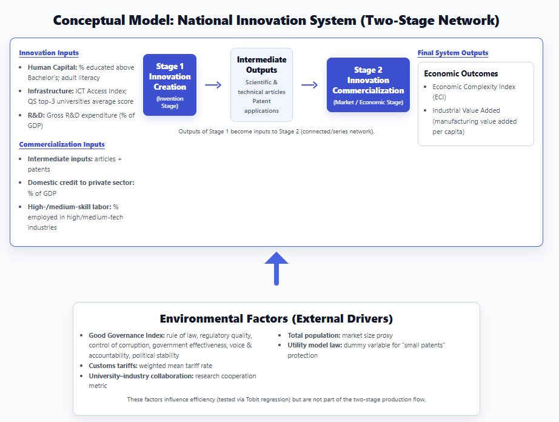

This study evaluates National Innovation System (NIS) efficiency by separating invention creation from commercialization. Results show Iran improves in generating scientific outputs, but overall system efficiency remains weak due to poor commercialization performance.
Innovation performance is often reported using single indicators (e.g., patents or publications), but these measures do not tell you whether a country is efficient with its resources. This project evaluates efficiency by separating the innovation pipeline into two connected stages: (1) producing scientific/technical outputs and (2) turning them into economic and market outcomes.
Iran’s performance is relatively strong in the invention-creation stage, but overall NIS efficiency is very low once commercialization is included. This suggests a policy shift toward market integration and stronger university–industry linkages.
Azerbaijan, Jordan, Armenia, Saudi Arabia, Qatar, Iran, Israel, Bahrain, Turkey, Georgia, Egypt, Pakistan, Kyrgyzstan, UAE, Kazakhstan.
South Korea and China are included as benchmarks for successful catching-up innovation policies.
The findings of this research are designed to benefit a wide range of stakeholders involved in national development—from high-level government officials to academic researchers and industry leaders.
Instead of treating the innovation system as a "black box," I divided it into two connected sub-processes
After efficiency scores are computed, Tobit models examine how environmental factors relate to efficiency. The analysis highlights governance quality and university–industry relations as key drivers.

The model uses multiple international data sources to build comparable indicators for inputs, intermediate outputs, and final outcomes. A key feature is using Economic Complexity (ECI) alongside more standard economic outputs to capture technological capability and export sophistication.
The study required the integration and normalization of large datasets from multiple international databases, including the World Bank (WDI & WGI), UNESCO (UIS.Stat), WIPO, Global Innovation Index, ILOSTAT, and the Atlas of Economic Complexity.
| Stage | Variable | Indicator Description | Data Source |
|---|---|---|---|
| Stage 1 — Creation | Human Capital | Higher education attainment; adult literacy rate | UNESCO (UIS.Stat), World Bank (WDI) |
| Stage 1 — Creation | Infrastructure | ICT Access Index; QS top-3 universities score | Global Innovation Index, QS Rankings |
| Stage 1 — Creation | R&D Expenditure | Gross R&D spending (% of GDP) | UNESCO, World Bank |
| Intermediate Output | Scientific Publications | Scientific & technical journal articles | World Bank (WDI) |
| Intermediate Output | Patent Applications | Total patent filings | WIPO |
| Stage 2 — Commercialization | Domestic Credit | Credit to private sector (% of GDP) | World Bank (WDI) |
| Stage 2 — Commercialization | High-Skill Labor | Employment in high & medium-tech industries | ILOSTAT |
| Final Output | Economic Complexity Index | Export diversity & technological capability | Atlas of Economic Complexity |
| Final Output | Industrial Value Added | Manufacturing value added per capita | World Bank (WDI) |
Good Governance Index
Composite governance measure constructed via PCA from World Governance Indicators
(rule of law, regulatory quality, corruption control, government effectiveness, political stability,
voice & accountability).
Source: World Bank (WGI)
University–Industry Collaboration
Measures research cooperation intensity between academia and industry.
Source: Global Innovation Index
Customs Tariffs
Weighted mean tariff rate used as trade policy barrier indicator.
Source: World Bank (WDI)
Utility Model Law
Dummy variable capturing legal protection of incremental (“small”) innovations.
Source: WIPO
Iran performs strongly in innovation creation but exhibits very low overall efficiency once commercialization is incorporated.
The core systemic failure lies not in producing knowledge, but in transforming that knowledge into economic value.
Iran ranks relatively high in scientific publications and patent generation within the country sample, indicating an efficient knowledge production system supported by human capital and R&D investment.
Efficiency scores decline sharply when second-stage outputs such as economic complexity and industrial value added are included, revealing systemic weaknesses in innovation diffusion and market conversion.
Governance quality—including rule of law, regulatory effectiveness, and political stability—shows a statistically significant positive relationship with national innovation efficiency.
Collaboration appears to constrain pure invention output but becomes critical in the commercialization stage, supporting the translation of research into industrial and economic applications.
Resources should shift from invention expansion to commercialization infrastructure. Increasing industrial value added and economic complexity is more critical than further growth in publication or patent volume.
Promotion and funding criteria should move beyond publication counts, incorporating technology transfer, industry partnerships, and applied innovation outcomes as core performance indicators.
Institutional quality directly affects innovation efficiency. Improving regulatory quality, legal enforcement, and political stability is essential for enabling innovation diffusion and private-sector investment.
High customs tariffs hinder technological catching-up. Trade liberalization can accelerate knowledge diffusion, technology imports, and industrial upgrading.
While utility model laws show statistically limited impact across countries, they may still support incremental innovation and early technological capability building.
National innovation performance depends less on the volume of knowledge produced and more on the system’s capacity to commercialize that knowledge. Policy effectiveness therefore hinges on strengthening the second stage of the innovation system.
The project integrates cross-country indicators from major international datasets and applies efficiency modeling and regression techniques to identify bottlenecks and drivers of performance.
Two-stage connected DEA (output-oriented, VRS) with efficiency decomposition.
Explains efficiency scores using censored regression with governance and collaboration drivers.
Principal Component Analysis used to compress governance dimensions into a single index.
Macroeconomic, industrial, and governance indicators for cross-country comparability.
Education, human capital, and R&D statistics.
Patent indicators, infrastructure/collaboration metrics, and economic complexity rankings.